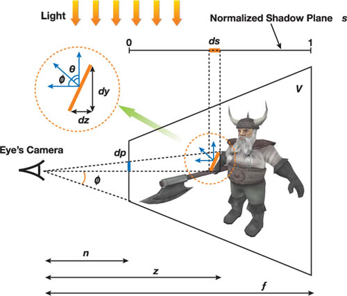

在这一技术中，视椎体被按照深度被平行于视平面的平面分割为多个深度层，每个深度层都会独立生成各自的 shadow map 。这一技术主要是为了提升 shadow map 在 view space 的采样频率，并与深度带来的采样频率变化所匹配。
PSSM 中的两个核心问题是：
如何选择分割的位置
如何平衡多pass和渲染阴影带来的性能损失
PSSM 算法主要分为四步：
使用切割平面将视椎体分割为 m 份
为这些部分计算光源的 VP 矩阵
为这些部分以相同的分辨率 res 生成 PSSM
将阴影应用到场景中
虽然可以让用户自定义分割方式，但此处使用的是论文中使用的 practical split scheme 方法。

SM 上的单位纹素 ds 投影到视平面上的面积为 dp ，可以定义走样的误差：
e r r o r = d p d s = 1 tan ϕ ⋅ d z z d s ⋅ cos ϕ cos θ error = {\mathrm{d}p \over \mathrm{d}s} = {1 \over \tan\phi}\cdot{\mathrm{d}z \over z\mathrm{d}s}\cdot{\cos\phi\over\cos\theta}
e r r o r = d s d p = tan ϕ 1 ⋅ z d s d z ⋅ cos θ cos ϕ
这一公式可以被分解为透视走样 d z z d s {\mathrm{d}z \over z\mathrm{d}s} z d s d z cos ϕ tan ϕ cos θ {\cos\phi \over \tan\phi\cos\theta} tan ϕ cos θ cos ϕ
Practical Split Scheme 在这一分割方法中，分隔位置定义为：
C i = λ C i log + ( 1 − λ ) C i u n i C_i = \lambda C_i^{\log} + (1 - \lambda)C_i^{\mathrm{uni}}
C i = λ C i log + ( 1 − λ ) C i u n i
其中的 C l o g , C u n i C^{\mathrm{log}}, C^{\mathrm{uni}} C l o g , C u n i λ \lambda λ
为了达到最优的透视走样分布，我们需要 d z z d s {\mathrm{d}z \over z\mathrm{d}s} z d s d z d z z d s = ρ \frac{d z}{z d s}=\rho z d s d z = ρ s s s z z z
s ( z ) = ∫ 0 s d s = 1 ρ ∫ n z 1 z d z = 1 ρ ln ( z n ) s(z)=\int_{0}^{s} d s=\frac{1}{\rho} \int_{n}^{z} \frac{1}{z} d z=\frac{1}{\rho} \ln \left(\frac{z}{n}\right)
s ( z ) = ∫ 0 s d s = ρ 1 ∫ n z z 1 d z = ρ 1 ln ( n z )
由于 s ( f ) = 1 s(f) = 1 s ( f ) = 1 ρ = ln ( f / n ) \rho = \ln(f / n) ρ = ln ( f / n ) s s s m m m
s i = s ( C i log ) = 1 ln ( f / n ) ln ( C i log n ) = i m C i l o g = n ( f n ) i / m s_{i}=s\left(C_{i}^{\log }\right)=\frac{1}{\ln (f / n)} \ln \left(\frac{C_{i}^{\log }}{n}\right) = {i \over m}\\
C_i^{\mathrm{log}} = n\left({f \over n}\right)^{i / m}
s i = s ( C i log ) = ln ( f / n ) 1 ln ( n C i log ) = m i C i l o g = n ( n f ) i / m
虽然基于对数的分割方法可以提供理论上最优的分割结果，但是在实践中靠近近平面的分割平面会非常接近彼此，从而在近平面附近产生过采样。
另一方面，均匀分割则直接按照深度均匀地放置分割平面：
C i u n i = n + ( f − n ) i m C_i^{\mathrm{uni}} = n + (f - n) {i \over m}
C i u n i = n + ( f − n ) m i
但这带来的走样实际上和同样分辨率下标准的 SM 并无差距。这一分割方法会在近平面附近造成欠采样，而在较远的部分造成过采样。
由于这两种分割方法均无法给出有效的分割，实际的实现中会用一个参数 λ \lambda λ
在分割视椎体之前，应该动态地调整摄像机的视椎体至恰好包含所有可视物体的设置，从而可以避免在近平面或远平面浪费采样。
和常规的 SM 相似，PSSM 也需要计算光源的 VP 矩阵以生成 SM 。由于我们将视椎体分为了多个子区域，我们需要对每一个子区域计算 VP 矩阵。主要的计算方法有两种：
和场景无关的方法直接取完整包含分割块的部分作为 VP 矩阵
通过引入场景信息，可以只包含可能向视椎体中投影的所有物体即可
为了得到对应的投影矩阵，我们需要计算分割的视椎体 V i V_i V i
1 2 3 4 5 6 7 8 9 10 11 12 13 14 15 16 17 18 19 20 21 22 23 24 25 26 Matrix Light::CalculateCropMatrix (Frustum splitFrustum) { Matrix lightViewProjMatrix = viewMatrix * projMatrix; BoundingBox cropBB = CreateAABB (splitFrustum.AABB, lightViewProjMatrix); cropBB.min.z = 0.0f ; float scaleX, scaleY, scaleZ; float offsetX, offsetY, offsetZ; scaleX = 2.0f / (cropBB.max.x - cropBB.min.x); scaleY = 2.0f / (cropBB.max.y - cropBB.min.y); offsetX = -0.5f * (cropBB.max.x + cropBB.min.x) * scaleX; offsetY = -0.5f * (cropBB.max.y + cropBB.min.y) * scaleY; scaleZ = 1.0f / (cropBB.max.z - cropBB.min.z); offsetZ = -cropBB.min.z * scaleZ; return Matrix ( scaleX, 0.0f , 0.0f , 0.0f , 0.0f , scaleY, 0.0f , 0.0f , 0.0f , 0.0f , scaleZ, 0.0f , offsetX, offsetY, offsetZ, 1.0f ); }
得到了裁剪矩阵后，对应的 VP 矩阵可以简单地写为：VP = lightViewMatrix * lightProjMatrix * cropMatrix
除了在裁剪空间计算切割矩阵以外，其实还可以在其它的空间中计算这一矩阵。但由于裁剪空间中所有的光线方向都统一为沿 z 轴，使得这种实现具有良好的统一性和直观性。
将场景的几何条件加入考量可以进一步减少样本的浪费。在这一实现中，近平面被移动至恰好包含 V i V_i V i
1 2 3 4 5 6 7 8 9 10 11 12 13 14 15 16 17 18 19 20 21 22 23 24 25 26 27 28 29 30 31 32 33 34 35 36 37 38 39 40 41 42 43 44 45 46 Matrix Light::CalculateCropMatrix (ObjectList casters, ObjectList receivers, Frustum frustum) BoundingBox receiverBB, casterBB, splitBB; Matrix lightViewProjMatrix = viewMatrix * projMatrix; for (int i = 0 ; i < casters.size (); i++){ BoundingBox bb = CreateAABB (casters[i]->AABB, lightViewProjMatrix); casterBB.Union (bb); } for (int i = 0 ; i < receivers.size (); i++){ bb = CreateAABB (receivers[i]->AABB, lightViewProjMatrix); receiverBB.Union (bb); } splitBB = CreateAABB (splitFrustum.AABB, lightViewProjMatrix); BoundingBox cropBB; cropBB.min.x = Max (Max (casterBB.min.x, receiverBB.min.x), splitBB.min.x); cropBB.max.x = Min (Min (casterBB.max.x, receiverBB.max.x), splitBB.max.x); cropBB.min.y = Max (Max (casterBB.min.y, receiverBB.min.y), splitBB.min.y); cropBB.max.y = Min (Min (casterBB.max.y, receiverBB.max.y), splitBB.max.y); cropBB.min.z = Min (casterBB.min.z, splitBB.min.z); cropBB.max.z = Min (receiverBB.max.z, splitBB.max.z); float scaleX, scaleY, scaleZ; float offsetX, offsetY, offsetZ; scaleX = 2.0f / (cropBB.max.x - cropBB.min.x); scaleY = 2.0f / (cropBB.max.y - cropBB.min.y); offsetX = -0.5f * (cropBB.max.x + cropBB.min.x) * scaleX; offsetY = -0.5f * (cropBB.max.y + cropBB.min.y) * scaleY; scaleZ = 1.0f / (cropBB.max.z – cropBB.min.z); offsetZ = -cropBB.min.z * scaleZ; return Matrix ( scaleX, 0.0f , 0.0f , 0.0f , 0.0f , scaleY, 0.0f , 0.0f , 0.0f , 0.0f , scaleZ, 0.0f , offsetX, offsetY, offsetZ, 1.0f ); }
根据硬件系统的不同，后两部分的实现可能各不相同。由于本算法使用了多个 SM ，在运行时需要更多的 pass 以生成它们。为了减小这一情况对渲染的压力，我们可以使用一种基于硬件的方法。主要的实现方法包括以下三种：
多 pass 方法：这种方法是最通用的，但也由于没有利用硬件的加速从而效率较低
利用 DX9 级别的硬件进行部分加速：这一方法可以去除生成阴影时需要的多 pass
利用 DX10 级别的硬件进行完全加速：利用 geometry shader 的 cloning 和 instancing 进一步加速
上述三种主要的实现方法的渲染流程如下图所示：
第一个方法过于古老了不予讨论。
第二个方法属于常规的实现思路。
第三个方法通过引入 geometry shader 进一步加速 SM 的生成。GS 在 VS 后运行，对于每个几何体，输入其中的顶点并输出一系列新的几何体。DX10 同样支持了 Render Target Array ，这使得程序可以在 GS 输出的时候指定输出的目标 RT 。这些方法使得几何体可以被复制以用于多个 PSSM 中。
我们首先需要准备 m 个 SM 作为一个数组，每个 SM 均需要有对应的材质绑定。特别地，当 SM 访问超出边界时，需要设置一个常值作为边界颜色。创建的过程如下：
1 2 3 4 5 6 7 8 9 10 D3D10_TEXTURE2D_DESC DescTex = {}; DescTex.Width = shadowMapSize; DescTex.Height = shadowMapSize; DescTex.ArraySize = numSplits; DescTex.Format = DXGI_FORMAT_R32_TYPELESS; DescTex.Usage = D3D10_USAGE_DEFAULT; DescTex.BindFlags = D3D10_BIND_DEPTH_STENCIL | D3D10_BIND_SHADER_RESOURCE; DescTex.MipLevels = 1 ; DescTex.SampleDesc.Count = 1 ; device->CreateTexture2D (...)；
使用 DX10 中新引入的 Resource View 解释内容：
1 2 3 4 5 6 7 8 9 10 11 12 D3D10_SHADER_RESOURCE_VIEW_DESC DescSRV = {}; DescSRV.Format = DXGI_FORMAT_R32_FLOAT; DescSRV.ViewDimension = D3D10_SRV_DIMENSION_TEXTURE2DARRAY; DescSRV.Texture2DArray.ArraySize = numSplits; DescSRV.Texture2DArray.MipLevels = 1 ; device->CreateShaderResourceView (...) D3D10_DEPTH_STENCIL_VIEW_DESC DescDSV = {}; DescDSV.Format = DXGI_FORMAT_D32_FLOAT; DescDSV.ViewDimension = D3D10_DSV_DIMENSION_TEXTURE2DARRAY; DescDSV.Texture2DArray.ArraySize = numSplits; device->CreateDepthStencilView (...);
就可以得到一组用于采样的 SM 了。我们不必创建 RT ，因为在此处我们唯一关心的只有深度值。下面的代码负责设置视口和 RT ：
1 2 3 4 5 6 7 8 9 D3D10_VIEWPORT vp; vp.Width = shadowMapSize; vp.Height = shadowMapSize; vp.MinDepth = 0 ; vp.MaxDepth = 1 ; vp.TopLeftX = 0 ; vp.TopLeftY = 0 ; device->RSSetViewports (1 , &vp); device->OMSetRenderTargets (0 , NULL , pDSV);
在找到了可能的投影物体之后，需要跟踪其 firstSplit 和 lastSplit 两个变量，这会用于确定该物体渲染的 SM 序列。我们同样需要保存裁剪矩阵的数组以在同一个 pass 中生成所有 SM 。
对于每一个投影物，需要遍历其占据的所有分割部分生成 SM 。下面给出了两种不同的方法以复制同一物体：
在这种方法中，可以使用 GS 将几何体的三角形提交到不同的 RT 中。
在这种方法下，VS 只需要负责将每个顶点转换到光源的裁剪空间内，这一步骤对于所有投影物都是一样的。接下来使用 GS 将三角形复制到具体的 RT 上并应用对应的裁剪变换。样例代码如下：
1 2 3 4 5 6 7 8 9 10 11 12 13 14 15 16 17 18 19 20 21 22 23 struct GS_OUT { float4 pos : SV_POSITION; uint RTIndex : SV_RenderTargetArrayIndex; }; [maxvertexcount(NUMSPLITS * 3 )] void GS_RenderShadowMap(triangle VS_OUT In[3 ], inout TriangleStream<GS_OUT> triStream) { for (int split = firstSplit; split <= lastSplit; split++) { GS_OUT Out; Out.RTIndex = split; for (int vertex = 0 ; vertex < 3 ; vertex++) { Out.pos = mul(In[vertex].pos, cropMatrix[split]); triStream.Append(Out); } triStream.RestartStrip(); } }
在支持 Instancing 的 DX10 中，VS 可以从 SV_InstanceID 获取当前的实例编号以应用不同的裁剪矩阵。在 CPU 侧只需要在 DrawIndexedInstanced() 设置实例数量即可。
其代码如下：
1 2 3 4 5 6 7 8 9 10 11 12 13 14 15 16 17 18 19 20 21 22 23 24 25 26 27 28 29 30 31 struct VS_IN { float4 pos : POSITION; uint instance : SV_InstanceID; }; struct VS_OUT { float4 pos : POSITION; uint split : TEXTURE0; }; VS_OUT VS_RenderShadowMap(VS_IN In) { VS_OUT Out; Out.pos = mul(In.pos, ...); Out.split = firstSplit + In.instance; Out.pos = mul(Out.pos, cropMatrix[Out.split]); return Out; } [maxvertexcount(3 )] void GS_RenderShadowMap(triangle VS_OUT In[3 ], inout TriangleStream<GS_OUT> triStream) { GS_OUT Out; Out.RTIndex = In[0 ].split; Out.pos = In[0 ].pos; triStream.Append(Out); Out.pos = In[1 ].pos; triStream.Append(Out); Out.pos = In[2 ].pos; triStream.Append(Out); triStream.RestartStrip(); }
这一方法同样可以降低 API 开销，但其需要的计算次数其实是一样的。但这一方法可能可以因为不需要在 GS 中扩展大量数据而得到较高的效率。
上述两种方法甚至可以被同时使用，每种方法都用于处理一部分投影物。
这里的阴影判定和 DX9 的几乎一样，主要的区别在于采样材质数组的操作不同。最简单的方法是直接使用 SampleLevel() 从数组中采样材质。其中传入的第三个维度代表了材质位置。
虽然这种方法可以正常地得到需要的信息，但当需要做进一步的 PCF 处理时就不那么好用了，使用 HLSL4 提供的 SampleCmpLevelZero() 可以同时进行采样和比较。利用一个线性比较滤波器就可以得到 PCF 的结果。
不幸的是，这一函数无法应用于材质列表上。它实际上是用于 Cube Map 上的。我们可以通过使用 6 个分割平面创建一个 Cube Map 以绕过这个限制。需要的配置修改如下：
1 2 3 4 5 6 7 DescTex.ArraySize = 6 ; DescTex.MiscFlags = D3D10_RESOURCE_MISC_TEXTURECUBE; . . . DescSRV.ViewDimension = D3D10_SRV_DIMENSION_TEXTURECUBE; DescSRV.TextureCube.MipLevels = 1 ;
下面的代码将采样材质的坐标转换为 Cube Map 坐标：
1 2 3 4 5 6 7 float3 cubeCoord; if (split == 0 ) cubeCoord = float3 (0.5 , 0.5 - pos.y, 0.5 - pos.x); else if (split == 1 ) cubeCoord = float3 (-0.5 , 0.5 - pos.y, pos.x - 0.5 ); else if (split == 2 ) cubeCoord = float3 (pos.x - 0.5 , 0.5 , pos.y - 0.5 ); else if (split == 3 ) cubeCoord = float3 (pos.x - 0.5 , -0.5 , 0.5 - pos.y); else if (split == 4 ) cubeCoord = float3 (pos.x - 0.5 , 0.5 - pos.y, 0.5 ); else if (split == 5 ) cubeCoord = float3 (0.5 - pos.x, 0.5 - pos.y, -0.5 )；
下面的 PS 负责合成阴影：
1 2 3 4 5 6 7 8 9 10 11 12 13 14 15 16 17 18 19 20 21 22 23 24 25 26 27 28 29 30 31 32 33 34 35 36 37 38 39 40 41 42 43 44 45 static const float3 offset[6 ] = { float3 (0.5 , 0.5 , 0.5 ), float3 (-0.5 , 0.5 , -0.5 ), float3 (-0.5 , 0.5 , -0.5 ), float3 (-0.5 , -0.5 , 0.5 ), float3 (-0.5 , 0.5 , 0.5 ), float3 (0.5 , 0.5 , -0.5 ) }; static const float3 mulX[6 ] = { float3 (0 , 0 , -1 ), float3 (0 , 0 , 1 ), float3 (1 , 0 , 0 ), float3 (1 , 0 , 0 ), float3 (1 , 0 , 0 ), float3 (-1 , 0 , 0 ) }; static const float3 mulY[6 ] = { float3 (0 , -1 , 0 ), float3 (0 , -1 , 0 ), float3 (0 , 0 , 1 ), float3 (0 , 0 , -1 ), float3 (0 , -1 , 0 ), float3 (0 , -1 , 0 ) }; SamplerComparisonState shadowMapSampler { ComparisonFunc = Less; Filter = COMPARISON_MIN_MAG_LINEAR_MIP_POINT; }; float4 PS_RenderShadows (PS_INPUT In) : SV_Target { float light = 1.0f ; for (int split = 0 ; split < numSplits; split++) { if (In.distance > splitEnd[split]) { float4 texpos = In.texturePos[split]; texpos.xyz /= texpos.w; float3 cubeCoord = offset[split] + mulX[split] * texpos.x + mulY[split] * texpos.y; if (min (pos.x, pos.y) > 0 && max (pos.x, pos.y) < 1 ) { light = shadowMapCube.SampleCmpLevelZero (shadowMapSampler, cubeCoord, texpos.z); } break ; } } return light; }
考虑了处理额外边界条件的情况，这一方法比起采样材质序列减少了 25 条指令，但这会导致分割数目恒为 6 ，这在很多情况下都会浪费内存。
为了提高 PSSM 的阴影质量，还可以使用以下的方法：
滤波技术：使用 PCF，VSM 等方法对 SM 进行滤波以减少走样
打包材质：在材质采样器数量较少时，可以将不同的 SM 打包到一个材质内
结合不同的算法使用：一种有趣的分割算法的用途是在不同的分割内使用不同的 SM 方法，如 PSM，LiSPSM，TSM 等
可变的材质分辨率：在不同的分割内使用不同的分辨率以减少材质生成和储存的花费
在线性空间处理深度